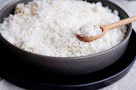

Rice

Description
Rice is the most common food in Africa.
It is the most widely consumed. It is easy to prepare and delicious to taste.
Ingredients
- Rice
- Water
- Salt
- Seasoning
Steps
- Boil the rice in hot water for about 45 mins.
- Add salt to it to taste.
- Add the seasoning.
- Let it boil for another 5 mins
- The rice is ready to serve.